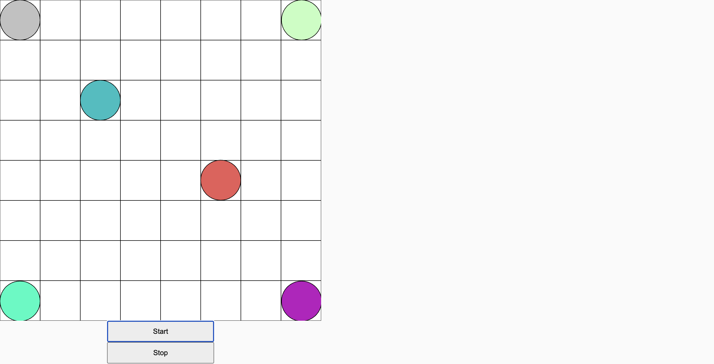

I initially developed this project as a 2D version using p5.js, where circles were arranged within a grid system. The pitch of the circles increases as they move higher along the x and y axes. In the 2D version, users can drag and click on the circles to trigger synth sounds, and they can also hold down multiple notes simultaneously to create harmonies.

After creating 2D version, I moved onto creating the 3D version by using three.js, node.js, and tone.js. Instead of a 2D grid, I tried to
create a 3D dimensional box with multiple grids that are stacked on top of each other. Every time the user click "Start the Virtual World", spheres are automatically generated
in this vector of space.
Users can drag the spheres in the x, y, z axies and trigger synth sound in the process. This was designed as an interactive tool where anyone without any prior music knowledge or experience can create music.
Users can simply access the webpage and start to create sounds by either clicking and dragging the spheres or pressing on the keyboard commands for drum sounds.
Users are able to make connections to the sound that they are making by seeing the distance between the notes visually in this 3-dimensional space.